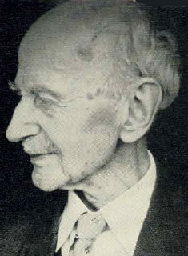
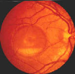

|  |
Best's disease (vitelliform macular dystrophy) = Heredofamilial
macular degenerations with autosomal dominant inheritance.
| 
Pseudohypopyon stage in Best's disease. |
Friedrich Best was born in Wermelskirehen in the Rhineland and received his early medical and ophthalmological education at the clinic of Theodore Leber at Heidelberg and then went to Giessen where, under Vossius, he became assistant professor from 1896 to 1905, during which time he spent a period with the great physiologist, Hering. In 1906 he settled in Dresden until on the division of Germany he came to Neidermarsburg in Western Germany where he worked until his 90th year. Apart from his classical studies on macular degeneration he was always interested in the physiology of vision and was the first to use a logarithmic scale in the measurement of dark adaptation.
Reference: